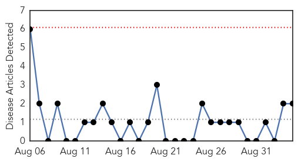
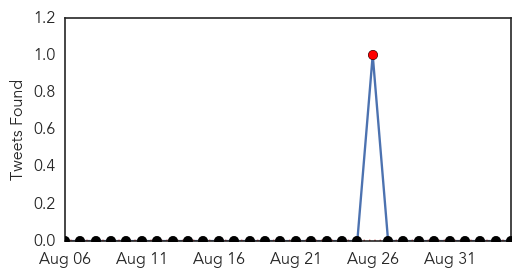
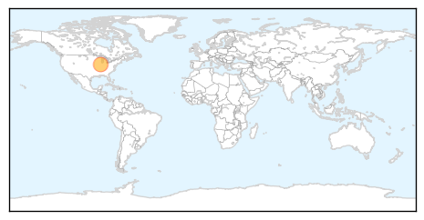
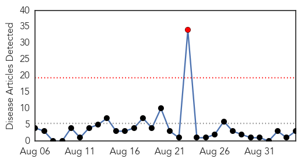
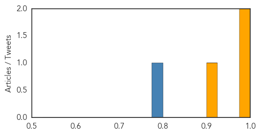

Mumps
30-Day Web Trend
0 alerts, 0 warnings

30-Day Twitter Trend
3 alerts, 0 warnings

Article Locations
Article Confidences

Top Articles:
Top Tweets:
-
No tweets found for Sep 04, 2015
Cholera
30-Day Web Trend
1 alerts, 0 warnings

30-Day Twitter Trend
2 alerts, 0 warnings

Article Locations

Article Confidences
Top Articles:
Top Tweets:
- 0.780
- RT: Read summer fellow Rodline Louijeune's "The Worldwide Fight Against Impunity." Haiti cholera http:/…
- 0.600
- RT: Cholera outbreak threatens 4 regions in Tanzania, additional resources urgently needed to contain further spread http://t.co…